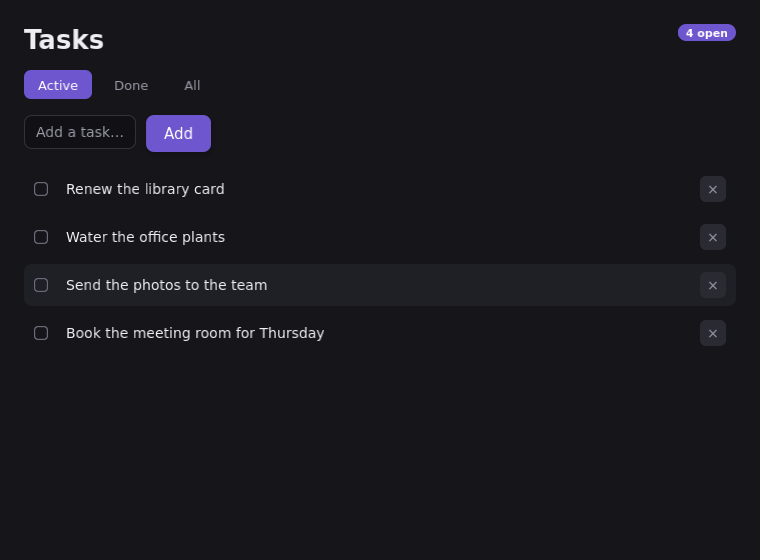

Everyday apps, with your work on your own computer.
Machin 365 is a small, open-source set of desktop apps for Linux. No account is needed to use Tasks, and sync is there only if you want it.
Install on UbuntuAn early project. Installing takes a few terminal commands today.

The apps
Tasks
A to-do list. Add a task, tick it off, and find it again later. It works without an internet connection.
Chat
Live chat rooms. It needs a chat server that you or someone else runs, and the app does not save messages.
Where your data goes
On your computer
Tasks saves to a small storage service that runs on your computer.
Sync, if you choose
Sign in to a server and a copy of your stored data goes there too. It is off until you set it up, which takes a terminal.
Usage counts
On by default and anonymous: version, system type, command used and whether it failed. Never your tasks or messages. Turn them off with machin-365 telemetry --off.
Install
For Ubuntu 22.04 or 24.04 on a 64-bit Intel or AMD computer. Open a terminal and paste:
curl -fsSL https://raw.githubusercontent.com/javimosch/machin-365/HEAD/install.sh | sh export PATH="$HOME/.local/bin:$PATH" machin-365 init machin-365 service install --latest machin-365 install tasks machin-365 run tasks
After this, Tasks is also in your app menu. Already on 0.4.0? Its update command crashes on Ubuntu 22.04, so run the first line again, then the service install line.
Where this is going
The goal is for someone who never uses a terminal to install Machin 365 and save a first task. It does not meet that goal yet.
Vision · North star · Roadmap